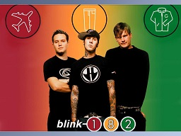

Blink-182.
Blink-182 adalah grup musik pop punk asal Amerika Serikat yang beranggotakan trio Mark Hoppus, Matt Skiba, dan Travis Barker dengan mantan personel mereka Scott Raynor dan Tom DeLonge. Mereka telah menjual lebih dari 41 juta kopi album di seluruh dunia sejak terbentuk di Poway, California pada tahun 1992. Bersama dengan drummer pertama mereka, Scott Raynor, Blink-182 merilis album perdana mereka, Cheshire Cat, pada tahun 1994 dan mendapatkan sukses menengah dengan album berikutnya, Dude Ranch, pada tahun 1997. Dude Ranch hingga saat ini tercatat telah terjual lebih dari satu juta keping. Scott Raynor kemudian digantikan oleh Travis Barker pada pertengahan tour tahun 1998. Blink-182 mendapatkan sukses yang lebih besar pada tahun 1999 dengan penjualan album multi-platinum Enema of the State, yang mencapai posisi 9 di chart Billboard 200 berkat singel "What's My Age Again" dan "All the Small Things". Blink-182 segera mendapatkan popularitas atas rasa humor mereka yang kurang sopan. Album mereka berikutnya, Take Off Your Pants and Jacket, pada tahun 2001 berhasil mencapai posisi 1 di Amerika Serikat, Kanada, dan Jerman. Album kelima mereka, Blink-182 dirilis pada tahun 2003 dan merupakan titik perubahan gaya Blink-182, dengan mencampur unsur eksperimental dan suara pop punk khas mereka yang menghasilkan suara yang terdengar lebih dewasa. Tom DeLonge meninggalkan Blink-182 pada awal 2005, membuat status Blink-182 berada dalam masa vakum. Setelah itu, DeLonge membentuk band Angels & Airwaves sementara Hoppus dan Barker membentuk band +44. Pasca vakumnya +44, Hoppus dan Barker kemudian mulai melakukan solo-karier. Blink-182 bersatu kembali pada Februari 2009. Album keenam mereka, Neighborhoods, dirilis pada 27 September 2011, dan meluncurkan album Dogs Eating Dogs pada 18 Desember 2012. Pada Januari 2015, Tom DeLonge memutuskan hengkang dari Blink-182 karena ia ingin fokus dengan hal-hal yang berada di luar dunia musik. Tom digantikan oleh Matt Skiba dari band Alkaline Trio
SALAM RABBIT HOLE INDONESIA DUDE..!!!.